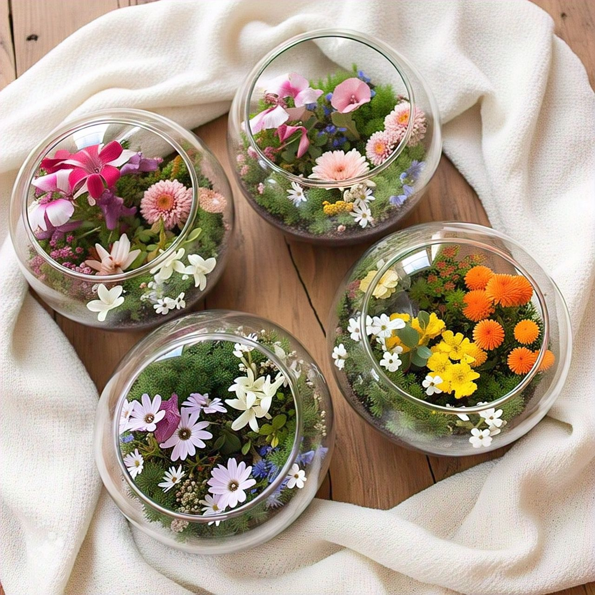
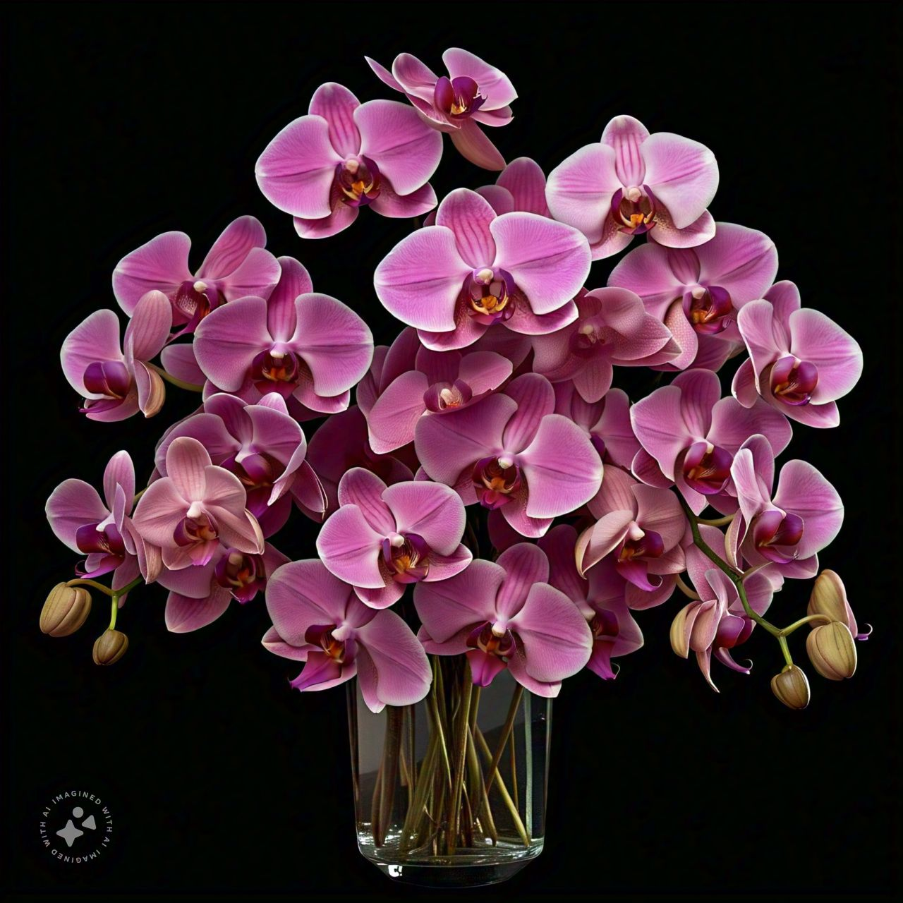
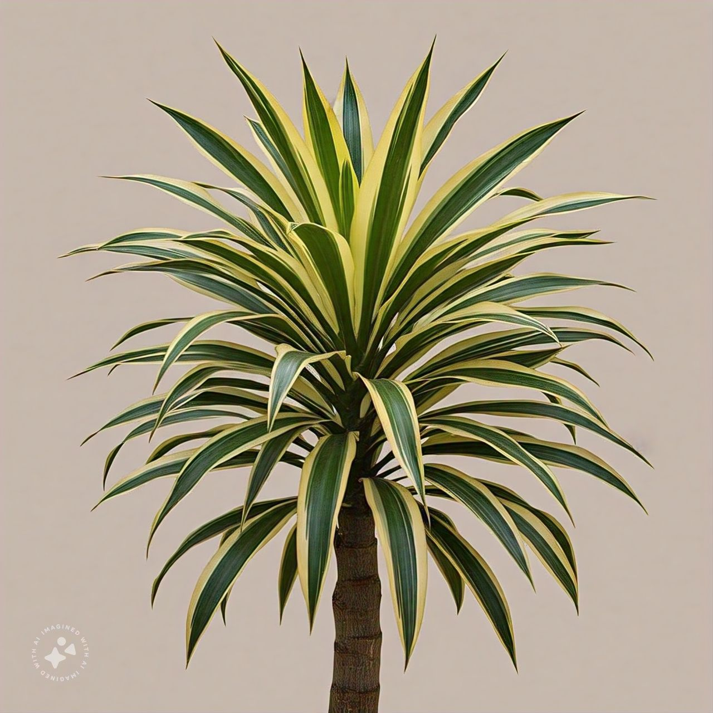

Dacaena
A dacaena é uma planta ornamental elegante e versátil, ideal para decoração de interiores e
exteriores. Com suas folhas longas e estreitas, cores variadas e caule reto, essa planta é uma
escolha popular para qualquer espaço.

Orquidia
As orquídeas são flores de uma beleza única e sofisticada,conhecidas por sua elegância e exotismo.
Com mais de 30.000 espécies, essas plantas são um verdadeiro tesouro da natureza.

Terrários de flor
Terrários de flor criados com amor e cuidado trazem a beleza da natureza para o seu espaço.
Combinam flores frescas, plantas exóticas e elementos naturais para um ambiente tranquilo.
Cada terrário é uma obra de arte única e inspiradora.
 Github
Github